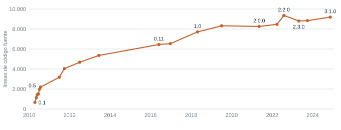
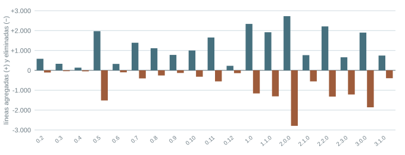
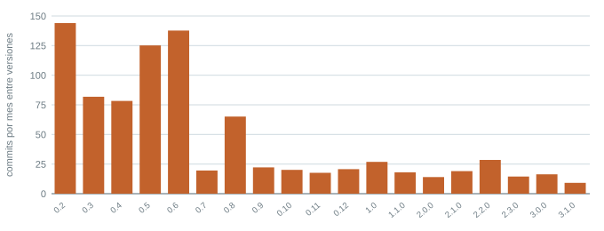

Este documento recorre los formatos de la unidad con Flask, un framework web de Python con más de quince años de historia pública. Todos los números salen de su repositorio y se pueden repetir con la herramienta del curso. El historial se consultó el 28 de octubre de 2026; el último commit revisado es del 7 de octubre de 2026.
Léanlo antes de llenar sus propios formatos. Cada sección abre con lo que hay que hacer y después muestra cómo quedó con Flask. Lo que importa es el razonamiento: su sistema tendrá otra evidencia, otros cambios y otras deudas. Flask tiene una historia pública larga, así que la evidencia sale de Git; si su sistema no tiene esa historia, la evidencia sale de tickets, incidentes y versiones desplegadas.
git clone https://github.com/pallets/flask.git python herramientas/metricas_evolucion.py flask --incluir "flask.py,flask/**/*.py,src/flask/**/*.py" --muestra 40 --semilla 1
Los dos CSV que produce este comando están en la carpeta ejemplo_flask/ del repositorio,
con la clasificación manual de la muestra ya hecha.
Describir el sistema, formular el reto y decidir el alcance antes de medir. Es el contenido de la Actividad 0.
| Proyecto | Flask · github.com/pallets/flask |
| Qué hace y quién lo usa | Framework para construir aplicaciones web en Python. Lo usan desarrolladores de aplicaciones y autores de extensiones, que dependen de su API pública. |
| Tipo de sistema y componentes | Biblioteca de backend web. Componentes: aplicación, blueprints, línea de comandos, sesiones, JSON y plantillas. |
| Lenguaje y licencia | Python · BSD-3-Clause |
| Primera y última versión con funcionalidad nueva | 0.1 (16 de abril de 2010) y 3.1.0 (13 de noviembre de 2024). La 3.2.0 está en desarrollo. |
| Versiones con funcionalidad nueva | 20, con el patrón por defecto de la herramienta (X.Y o X.Y.0) |
| Qué se mide como código fuente | El paquete flask, que cambió de lugar dos veces: flask.py (0.1 a 0.4), flask/ (0.5 a 1.0) y src/flask/ (desde 1.1.0). Se excluyen pruebas, documentación, ejemplos y scripts. Hasta la 0.10 las pruebas estaban dentro del paquete, en flask/testsuite/; también se excluyen. |
| Registro de cambios | CHANGES.rst en la raíz, con una sección por versión |
| Tipo de programa según Lehman | E: se usa en un entorno real que cambia (versiones de Python, navegadores, servidores) y su uso cambia el entorno, porque miles de extensiones y aplicaciones dependen de su API. |
| Problema inicial | Una organización depende de Flask y cada actualización mayor retira API obsoletas y versiones de Python. |
| Reto | ¿Puede una organización seguir dependiendo de Flask cinco años más, y qué tendría que vigilar? |
| Alcance y lo que queda fuera | El paquete flask. Quedan fuera las pruebas, la documentación y las extensiones de terceros. |
| Criterio de éxito preliminar | Cada afirmación del análisis se rastrea hasta el historial público del proyecto. |
Sin la opción --incluir, la medición inicial contaba setup.py y la carpeta
testsuite: la versión 0.10 aparecía con 59 archivos en lugar de 20. Así se ve un error de medición que
cambia las conclusiones.
Pasar el CSV a los tres gráficos, anotar lo que se ve sin interpretarlo y explicar las versiones atípicas con el registro de cambios.

ejemplo_flask/evolucion_por_version.csv.

| Versión | Qué muestran los datos | Qué dice CHANGES.rst |
|---|---|---|
| 0.5 | De 1 archivo a 12; se eliminan 1.516 líneas y se agregan 1.970 | «Refactored Flask internally. It now consists of more than a single file.» |
| 2.0.0 | Se elimina más de lo que se agrega | Se retira el soporte para Python 2 y 3.5; desaparece la capa de compatibilidad _compat.py. |
| 2.3.0 | El tamaño baja de 9.357 a 8.799 líneas | «Remove previously deprecated code»: se retiran las API marcadas como obsoletas en la 2.2.0. |
Limitaciones: las líneas incluyen comentarios y docstrings, que en Flask son extensos. Una línea no equivale a funcionalidad; se usa como indicador de tamaño, junto con el número de archivos.
Leer el diff de cada commit de la muestra, clasificarlo y anotar la evidencia. Comparar con la heurística al final.
| Tipo | Commits | % de la muestra | % de los que tocan el producto |
|---|---|---|---|
| Fuera del producto (documentación, publicación, herramientas del equipo) | 24 | 60 % | — |
| Preventivo | 5 | 12,5 % | 31 % |
| Correctivo | 4 | 10 % | 25 % |
| Adaptativo | 4 | 10 % | 25 % |
| Perfectivo | 3 | 7,5 % | 19 % |
Dos hallazgos de método. Primero, 60 % de la muestra no toca el producto; solo 1.459 de los 3.829 commits
del proyecto modifican el paquete. Por eso el comando recomendado para su proyecto usa --solo-fuente. Segundo,
la heurística por palabras clave acierta en 15 de 40 commits. «Fix» aparece en correcciones de enlaces de la
documentación y en funcionalidades nuevas que cierran un issue.
| Commit | Heurística | Clasificación | Razonamiento |
|---|---|---|---|
3b393f89f6 Added template_global, fixes #657 | correctivo | perfectivo | El diff agrega un método nuevo con pruebas. El issue #657 pedía la funcionalidad; nada fallaba. |
9e686d93b6 remove deprecated RequestContext.g | adaptativo | preventivo | El entorno no cambió. Se retira código propio que ya estaba marcado como obsoleto, para reducir lo que hay que mantener. |
9efc1ebeeb add SESSION_COOKIE_PARTITIONED config | perfectivo | adaptativo | Es una opción nueva, pero existe porque los navegadores introdujeron el atributo Partitioned para las cookies. El cambio lo origina el entorno. |
27d28dcef4 y f29ec355e9, dos imports de compatibilidad | perfectivo / adaptativo | correctivo / preventivo | El primero repara una versión ya publicada que había sacado Session de la API pública. El segundo evita la misma falla antes de publicar la 0.8. Un diff casi igual se clasifica distinto según el momento. |
Para cada ley, escribir primero qué se esperaría ver y después buscarlo. La contraevidencia es obligatoria.
| Ley | Qué se esperaría ver | Evidencia | Contraevidencia | Veredicto |
|---|---|---|---|---|
| I Cambio continuo | Cambios originados en el entorno a lo largo de toda la vida | 4 de los 16 cambios al producto de la muestra son adaptativos: Python 3, Python 3.13, cookies de navegador, empaquetado. Cada versión mayor retira versiones viejas de Python. | — | Se observa |
| II Complejidad creciente | Que la complejidad suba salvo cuando hay trabajo para reducirla | Trabajo explícito para contenerla: 0.5 divide el archivo único; 2.0.0 retira la capa de Python 2; ciclos de obsolescencia (menciones a deprecat: 27 en 2.0.0, 91 en 2.2.0, 2 en 3.0.0); 31 % de los cambios al producto son preventivos. | Las supresiones type: ignore pasan de 58 (2.0.0) a 105 (3.1.0). | Se observa con matices: la complejidad se contiene porque se trabaja para eso |
| IV Estabilidad organizacional | Tasa de trabajo estable aunque cambie el equipo | Entre 14 y 28 commits por mes desde 2012, con 13 a 209 autores por intervalo (Figura 3). | Picos de los dos primeros años y caída a 9 commits por mes en la 3.1.0. | Se observa después de la etapa inicial |
| V Familiaridad | Crecimiento por versión acotado; después de una versión grande, una pequeña | Después de cada versión grande viene una pequeña: 2.0.0 (2.727 líneas agregadas) y 2.1.0 (766); 2.2.0 (2.211) y 2.3.0 (658); 3.0.0 (1.900) y 3.1.0 (743). | La 1.0 y la 1.1.0 son dos versiones grandes seguidas. | Se observa |
| VI Crecimiento continuo | Funcionalidad que aumenta versión tras versión | De 663 a 9.187 líneas; sigue habiendo cambios perfectivos en 2024 (cookies particionadas). | Desde 2018 el tamaño casi no crece y la 2.3.0 se reduce. El proyecto declara que el núcleo se mantiene pequeño y la funcionalidad crece en extensiones. | Se observa con matices |
| VII Calidad decreciente | Más defectos reportados o más tiempo de corrección con los años | — | — | Los datos no alcanzan: haría falta la serie de issues de defectos por versión |
| # | Deuda y dónde está | Origen | Interés | Pago | Prioridad |
|---|---|---|---|---|---|
| 1 | Supresiones de tipos type: ignore en src/flask/: 105 en la 3.1.0 y 90 en la rama principal hoy | Deliberada y prudente: se agregaron tipos a un código que no los tenía | Cada supresión es un punto donde el verificador de tipos no protege | Revisar y tipar cada caso; se está pagando por partes | Media |
| 2 | Período de obsolescencia de la 3.2.0: el alias RequestContext y la detección de firmas antiguas de los métodos de despacho | Deliberada y prudente: da tiempo a las extensiones | Dos rutas de código, avisos que mantener y lógica de detección en el camino de cada petición | Retirarlos en la versión siguiente, como se hizo en 2.3.0 y 3.0.0 | Alta, ya programada |
| 3 | Despacho interno apoyado en objetos proxy globales (request, current_app) | Deliberada y prudente: diseño original para una API simple | Código complejo para seguir el contexto activo, según el propio registro de cambios | En curso: en la 3.2.0 los métodos reciben el AppContext como parámetro | Alta, en curso |
| 4 | Soporte de Python 3.9 y 3.10 en la serie 3.1 (requires-python = ">=3.9"), versiones que llegaron a fin de soporte | Deliberada y prudente: no dejar a usuarios sin actualizaciones | No se pueden usar características nuevas del lenguaje y hay que probar en más versiones | Retirado en la 3.2.0 en desarrollo | Media |
| 5 | Pagada: capa de compatibilidad con Python 2 (_compat.py, de la 0.10 a la 1.1.0) | Deliberada y prudente | Cada cambio debía funcionar en dos lenguajes | Retirada en la 2.0.0, que elimina más de lo que agrega | Cerrada; se registra como antecedente |
La deuda 5 está pagada y se incluye para mostrar cómo se ve el pago en los datos (Figura 2, versión 2.0.0). En su documento, las deudas registradas deben estar vigentes.
Analizar los riesgos de cambios no controlados y de falta de estrategia de evolución, cada uno con su evidencia. Aquí los riesgos se miran desde una organización que depende de Flask.
| # | Riesgo | Grupo | Evidencia | Prob. | Impacto | Calidad afectada |
|---|---|---|---|---|---|---|
| 1 | Una actualización sin versiones fijadas rompe la aplicación al retirar API obsoletas | Cambios no controlados | Retiros de código obsoleto en 2.2.0, 2.3.0, 3.0.0 y 3.2.0 (F-02, deudas 2 y 3) | Alta | Alto | Disponibilidad |
| 2 | Los retiros se descubren el día de actualizar porque nadie sigue los avisos de obsolescencia | Falta de estrategia de evolución | Ciclo de avisos y retiro: 91 menciones en 2.2.0, 28 en 2.3.0 (F-04, ley II) | Media | Alto | Mantenibilidad |
| 3 | El entorno de ejecución queda sin soporte: la 3.2.0 deja de soportar Python 3.9 y 3.10 | Falta de estrategia de evolución | Deuda 4; ley I | Alta | Medio | Seguridad |
| 4 | Menos actividad del proyecto: correcciones más lentas | Falta de estrategia de evolución | 9 commits por mes en el intervalo de la 3.1.0 y ninguna versión con funcionalidad nueva desde noviembre de 2024 (F-02) | Media | Medio | Confiabilidad |
| Alcance del problema | El riesgo principal para quien depende de Flask es de configuración: saber qué versión usa cada sistema y controlar cuándo se actualiza. Ese es el problema que se abordaría en la Unidad 2. |
Seguir con condiciones. Flask sigue evolucionando, con una tasa de trabajo estable y un proceso explícito de obsolescencia que avisa una versión antes de retirar. Las condiciones que se derivan del diagnóstico:
Fowler, M. (2009). Technical debt quadrant. https://martinfowler.com/bliki/TechnicalDebtQuadrant.html
Lehman, M. M. (1996). Laws of software evolution revisited. En C. Montangero (Ed.), Software Process Technology (pp. 108–124). Springer. https://doi.org/10.1007/BFb0017737
Pallets. (2026). Flask [Repositorio de código fuente]. GitHub. https://github.com/pallets/flask